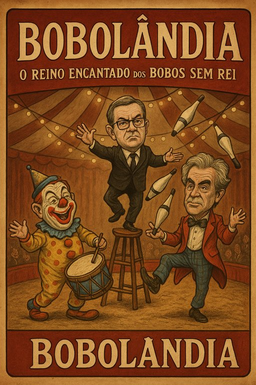

Publicado em 2025-06-15 15:49:30
Em Bobolândia — outrora chamada Portugal — vive-se um tempo tão ridículo que faria rir até os mortos de Antígona.
Aqui, o trono está vago, mas os bobos multiplicam-se como sardinhas em romaria. Não há rei, mas há corte. Não há ideias, mas há PowerPoints. Não há pão, mas há Excel.
O Primeiro Malabarista (alguns chamam-lhe Primeiro-Ministro por nostalgia) veio anunciar, com pompa, flautas de espumante e clarins desafinados, uma medida de génio: os trabalhadores vão poder escolher se recebem os subsídios de férias e Natal em duodécimos ou em duodécimos de ilusão.
É a política do “escolhe a forma como vais continuar a ser pobre”. Um buffet de miséria onde o povo, habituado a comer migalhas, pensa que está a escolher o prato principal.
E no palco da Assembleia, entre bailados de retórica e números de contorcionismo ideológico, os Deputalhaços debatem-se — não pelo bem comum, mas pelo melhor lugar no camarote das mordomias. A justiça dança com a lentidão de um elefante em gelo. A economia tropeça como bêbado em calçada molhada. E o povo… aplaude. Porque foi ensinado a confundir palhaçada com governação.
E algures, no canto da sala, entre dois espelhos gastos, está um homem com ar de sonso e pose de estadista, que foi Primeiro, foi preso, foi solto, foi entrevistado e ainda é considerado “figura pública”. Dizem que tem lábia. Nós, os que ainda temos fígado, dizemos que tem é uma veia artística — digna do Coliseu.
Portugal? Já não é bem um país. É um teatro de revista permanente, em exibição contínua desde 1974, onde todos os anos se repete o mesmo guião:
O mais trágico disto tudo é que os verdadeiros comediantes estão no desemprego. Foram substituídos pelos ministros.
Artigo da autoria de Francisco Gonçalves e de Augustus Veritas Lumen, para o blogue Fragmentos do Caos
“Nesta república de Bobolândia, os palhaços não animam o povo — governam-no.”
Com requinte irónico e toque de verdade cáustica, aqui vai a nota inicial que abre o artigo com um estrondo:
Nota do Autor:
Em Portugal, deixou de haver margem para comentário político.
O burlesco tomou conta do país — e dos seus desgovernos.
Os comediantes foram dispensados por redundância.
Os poucos que restam… ou emigraram, ou foram promovidos a ministros.Aqui, já não se governa — encena-se.
E como dizia um velho palhaço reformado:
“Se isto fosse uma farsa… era mais bem escrita.”